Welcome to an intro to The Trillion Dollar Kids Club("TDKC")
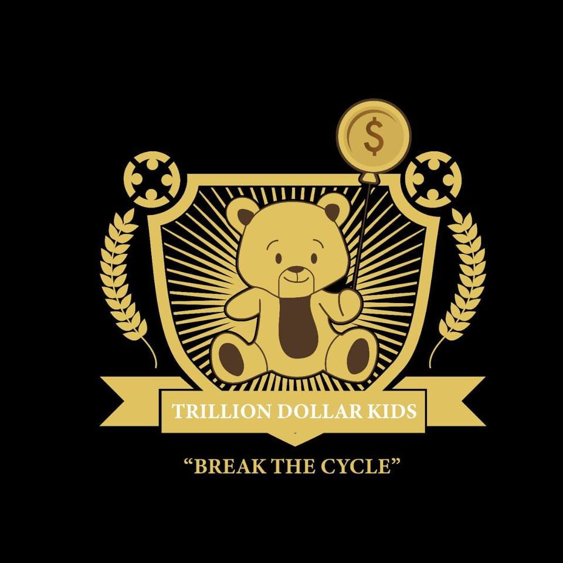
Who Is The Founder Of TDKC
Imboni Dr Uzwi Lezwe Radebe
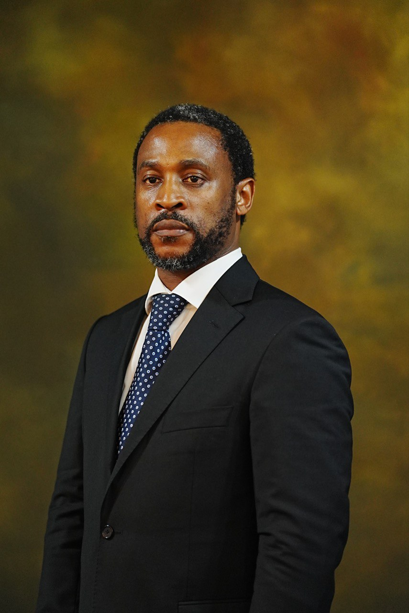
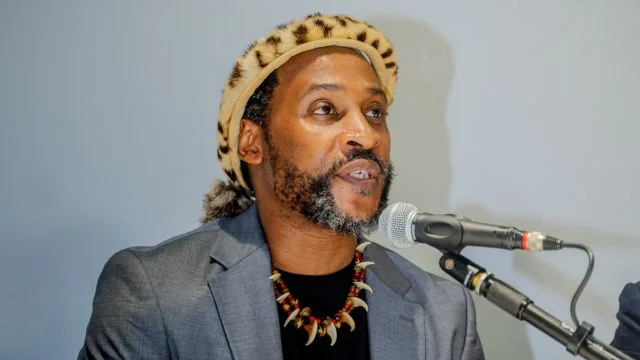
Dr. Radebe is an astute business man who founded and Chairs Trillion Cart Investments. Dr Radebe holds two Doctorates and many other qualifications from different institutions such as the University of Cape Town. He is a published author and established the Dr S.B Radebe Foundation a non-profit organisation in 2013. Dr Radebe is also the owner of Trillion Football Club (TFC).
Dr Radebe also sits as an advisor in a multimillion dollar international company. He is amongst a few black business men who have championed for the distributors model with the aim to empower people.
Furthermore, Dr Radebe also established African Centre of Excellence (ACE) in 2015 which aims to offer educational skills programs that will enhance African Excellence. The centre offers specialised mind-set program with the aim to be the number one leading African indigenous educational hub in Africa.
As the founder of Trillion Cart Investments, he has featured in some of the well-known Business and Leadership Magazines like BBQ, PIPA Magazine, Leadership, Business Tech and also featured on television programmes such as ENCA, NEWS24,and the SABC including international media, among others. Imboni Uzwi lezwe Holds many titles all around the world to learn more about him CLICK ON THE LINKS THAT FOLLOW Turin Global Spirituality Award to Dr. Radebe Honors African Indigenous Spirituality The path of a Spiritual Guider who founded The Revelation Spiritual Home
Scroll this section.
What Is The Mandate Behind TDKC
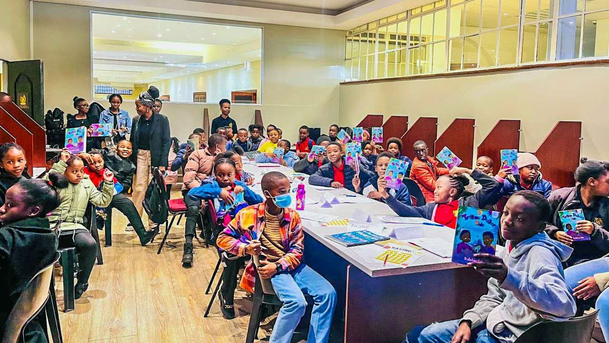
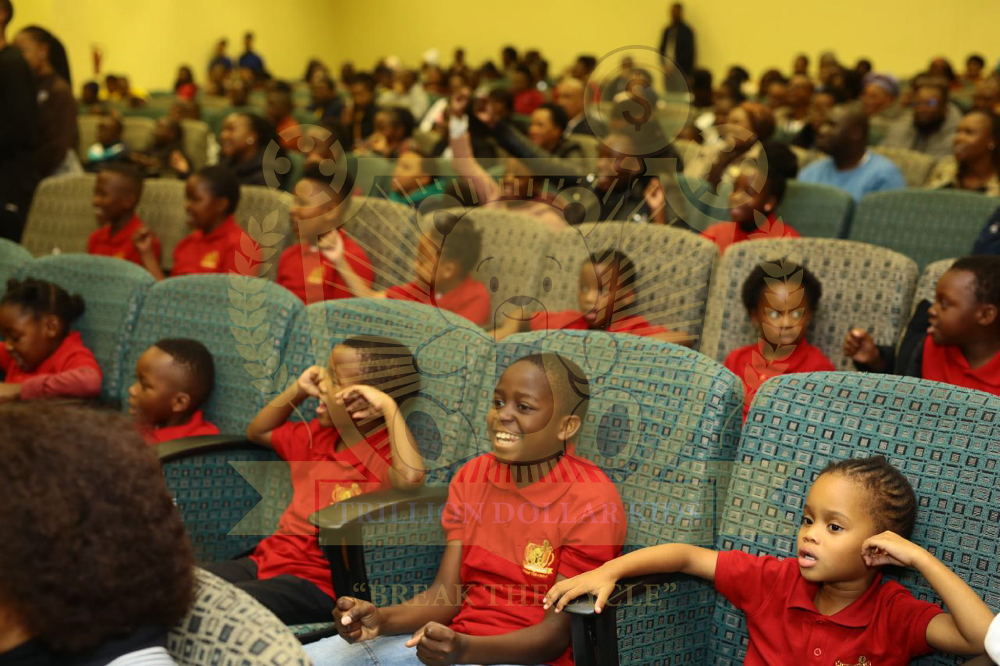
The vision of the founder of TDKC - Imboni Dr Uzwi-Lezwe is to mold future leaders of society that will break the cycle of poverty and create generational wealth while upholding good moral values and discipline. This club is known for being the first black owned financial literacy club that has changed the lives of many black children. Today Trillion Dollar Kids Club upholds one of the most excellent young entreprenuers with great financial records and being known as young hustlers, business investors, multi-business ladies and gents with ambitious goals in the business industry.
Literacy development is the process of learning words, sounds, and language. Children develop literacy skills in order to learn to read and write confidently and eventually improve their communication skills overall.
Children who have developed strong reading skills perform better in school and have a healthier self-image. They become lifelong learners and sought-after employees.
At TDKC we groom our students to be confident in expressing themselves and have a rich vocabulary. We have a variety of books published by Imboni Dr Uzwi-Lezwe that focuses on children - our latest book offering "Savings & Entrepreneurship" talks about the personal experience of Imboni's financial journey as young Samuel.
The Trillion Dollar Kids Book become the best selling book in all of the Exclusive Books stores all around South Africa.
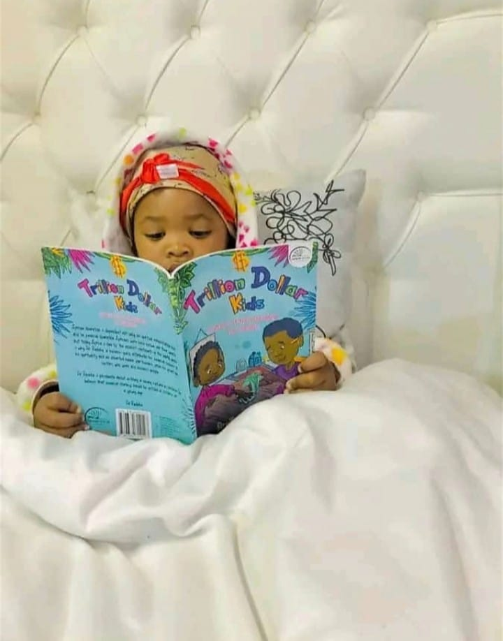
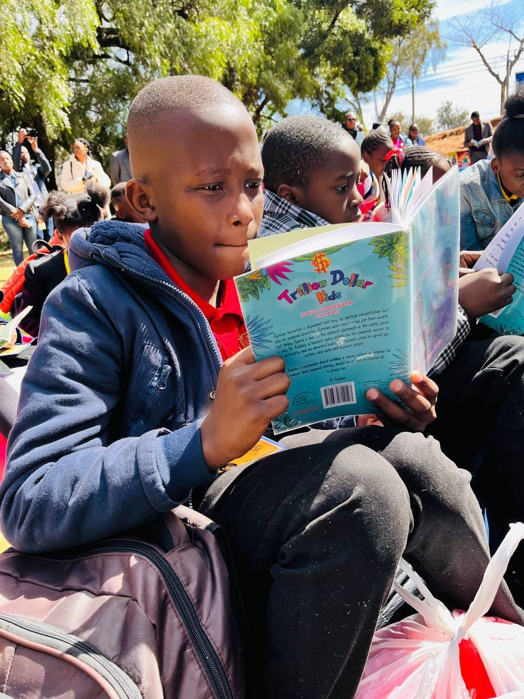
Scroll this section.
Trillion Dollar Kids Agriculture And The Economy Book
Imboni further continued to publish another book called Trillion Dollar Kids Agricultural Economic book for kids to further be enlightend by the world of agriculutre but in simple terms that any child would understand. The book is aimed at children who are interested in agriculture and the economy. And help children with understanding how to use natural resources and the role and importance of agriculuture in the economy that we live in today today.
 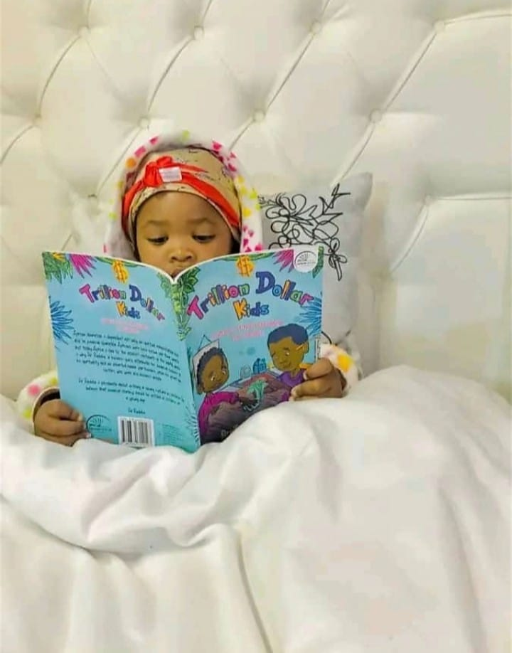
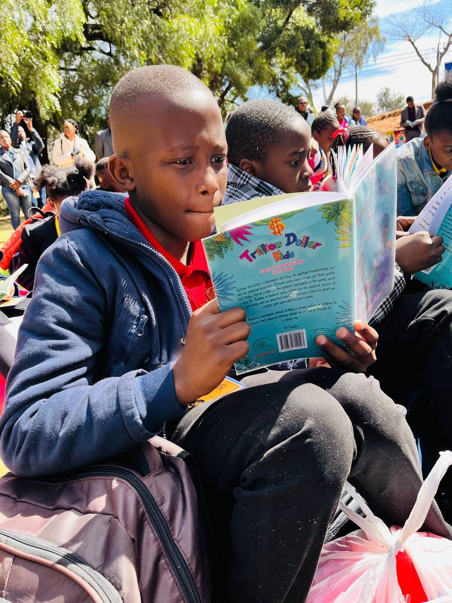
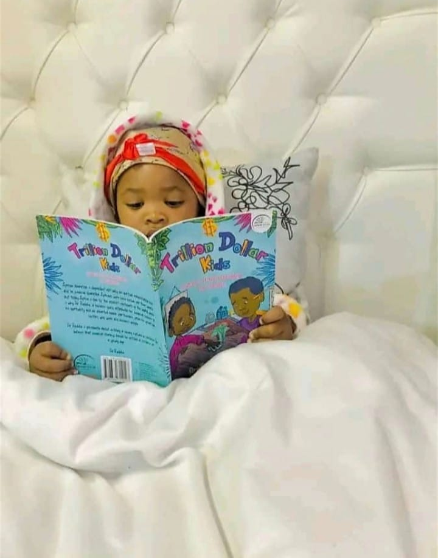
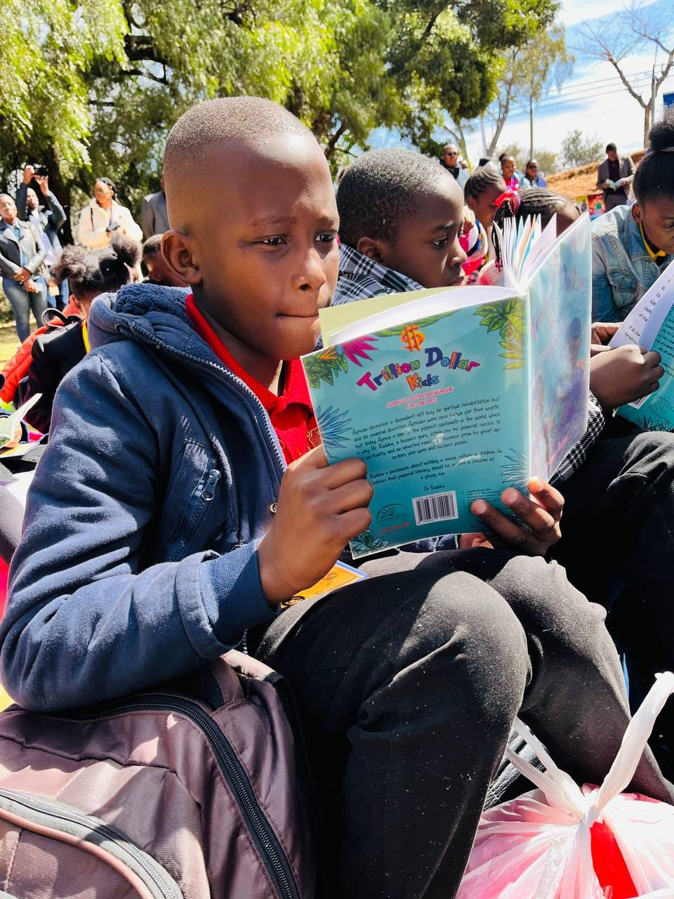